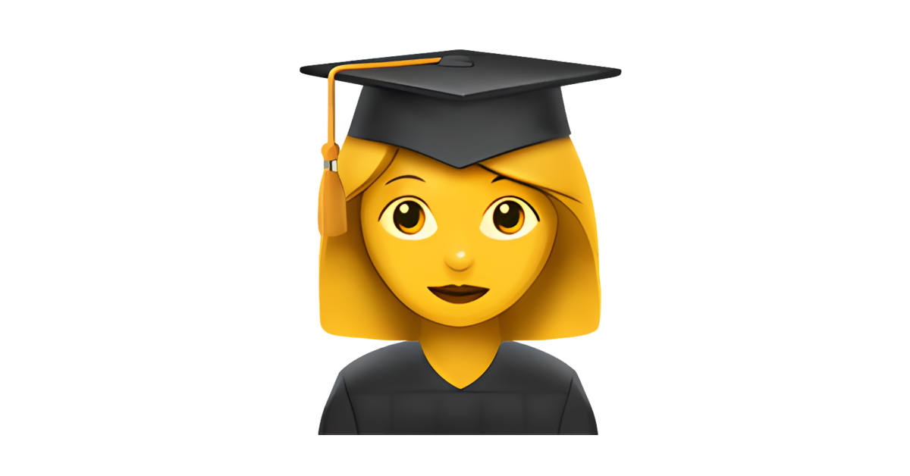
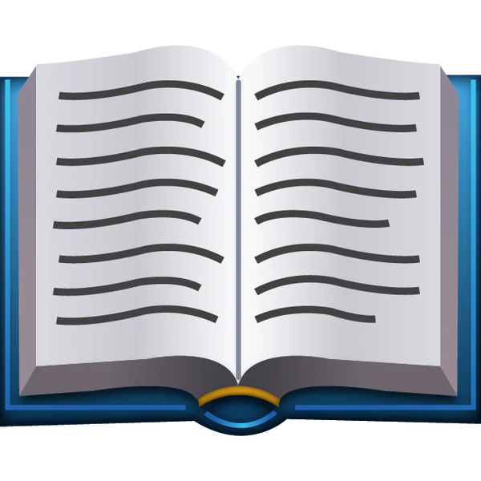

My Life with Skills Portfolio
🌟Major life Events
-
Born on 10th August 2005 in Chittoor,Andhra Pradesh,India.
- 👼Completed my scholing at Prakasam Vidyalaya.
- Completed my intermediate at sri Chaitanya Junior College.

Graduate my B.tech in Computer Science and Engineering at SITAMS.
Learned different programming languages like Java,Python,C..webp) Full Stack Web Developer.
Full Stack Web Developer.- Enjoy coding and building Web applications.
- Joined as a Web developer intern at TAP Academy in 2026.
💻My Technical Skills💻
- Java
- Python
- HTML
- CSS
- Javascript
- React JS
- Git and Github
- MySQL
🏆Achievements🏆
- 🎖️Participated in many coding competitions and hackathons.
- 🏅Consistently achieved high grades throughtout my academic journey.
🚀Research Projects
- Title:"Smart Restaurant Recommendation System"
Description:The Smart Restaurant Recommendation System is an AI-powered application designed to help users discover restaurants that best match their preferences, location, and dining context. By leveraging machine learning algorithms, natural language processing, and real-time data integration, the system provides personalized suggestions that go beyond simple ratings or reviews.
- Title:CATBOOST Driven Enhancement for Ultra Accurate Cloud Job Failure
Description:Cloud computing environments often face challenges with job scheduling and execution reliability, where failures can lead to wasted resources, increased costs, and degraded user experience. This project leverages the CatBoost machine learning algorithm to build a highly accurate predictive model that identifies potential job failures before they occur, enabling proactive mitigation strategies.
🛠Tools I use
- Visual Studio
- Git and Github
- Jupyter Notebook
🎯Hobbies
- 🎨Drawing
- 🛣️Travelling
- 📺Watching Movies
🖥️Tech Glossary🖥️
- HTML
- Hyper Text Markup language
- CSS
- Cascading Style Sheets
- Javascript
- A Programming language for web development
- Java
- A Versatile programming language used for various applications
- MySQL
- An Open-Source Relational Database Management System
🗓Daily Learning Routine
| Time |
Activity |
| Morning |
Revision & Practice |
| Afternoon |
New Concepts |
| Evening |
mini projects |
⭐Strengths and Weaknesses
- Strengths:Adaptability,Problem Solving,Consistent Learner
- Weaknesses:Overthinking,Time Management(but improving)
🧠Why I Choose Technology?
I choose technology because it allows me to create solutions that can impact real people. Tech gives me the freedom to learn continuously, build useful products, and grow logically and creatively.
Personal development Plan
Short-Term Goals
- Learning Advanced technologies
- Master Full Stack Web developement
Long-Term Goals
- Get a job in a reputed tech company
- Gain Experience in Software Engineering best Practices and team collaboration
📞Contact Me
- Email:example@gmail.com
- Github:github.com/example
- LinkedIn:linkedin.com/in/example
Thank you for visiting my portfolio!